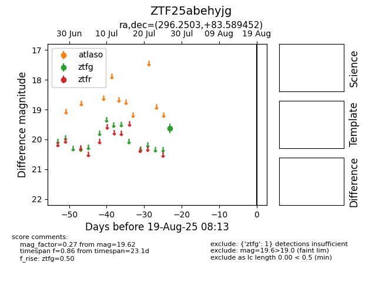

Target ZTF25abehyjg at 2025-08-06 17:45, see:
FINK: fink-portal.org/ZTF25abehyjg
Lasair: lasair-ztf.lsst.ac.uk/objects/ZTF25abehyjg
ALeRCE: alerce.online/object/ZTF25abehyjg
alt names
ZTF25abehyjg (ztf,fink)
coordinates:
equatorial (ra, dec) = (296.2503,+83.58945)
galactic (l, b) = (116.0217,+25.47515)
photometry
last ztfg=19.62
1 ztfg detections
